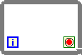
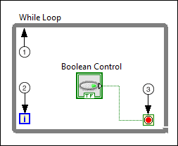

While Loop
Owning Palette: Structures
Requires: Base Development System
Repeats the code within its subdiagram until a specific condition occurs. A While Loop always executes at least one time.

 Add to the block diagram Add to the block diagram |
 Find on the palette Find on the palette |
Components of a While Loop
|  |
 |
Subdiagram—Contains code that the While Loop executes once per iteration. |
 |
Iteration Terminal (i)—Provides the current loop iteration count. The loop count always starts at zero for the first iteration. If the iteration count exceeds 2,147,483,647, or 231-1, the iteration terminal remains at 2,147,483,647 for all further iterations. If you need to keep count of more than 2,147,483,647 iterations, you can use shift registers with a greater integer range. |
 |
Conditional Terminal—Evaluates a Boolean input value to determine whether to continue executing the While Loop. To specify whether the loop stops for a TRUE or FALSE Boolean value, configure the continuation behavior of the loop. You also can determine when the loop stops by wiring an error cluster to the conditional terminal. |
 Tip To create a While Loop that automatically wires a stop button to the conditional terminal, add the While Loop from the Execution Control palette.
Tip To create a While Loop that automatically wires a stop button to the conditional terminal, add the While Loop from the Execution Control palette.
Configuring a While Loop
- Creating a basic While Loop
- Adjusting the timing of execution
- Automatically processing each element in an array
- Accumulating data in arrays leaving loops
- Passing values between iterations
- Monitoring the Boolean value of a terminal for each loop iteration
- Converting a While Loop to a For Loop or Timed Loop
- Conditionally writing values to output tunnels